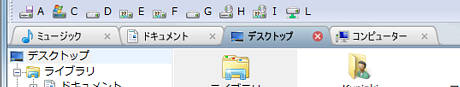
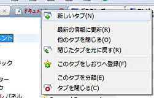

| 左クリック | クリックしたフォルダタブに切り替えます。 |
| 左クリックしてドラッグ | クリックしたフォルダタブをタブバー内で他のタブと入れ替えます。 |
| 右クリック | フォルダタブに対応したコンテキストメニューを表示します。

|
| ファイルやフォルダなどをドロップ | ファイル・フォルダをドラッグし、目的のタブにドロップすると、当該タブのフォルダにコピー・移動またはショートカットを作成することができます。 また、タブバーのタブ以外の場所にフォルダをドロップすれば、ドロップされたフォルダを新しいタブとして開くことが可能です。 |
| Ctrl+Tab | フォルダタブを次のタブに切り替えます。 |
| Shift+Ctrl+Tab | フォルダタブを前のタブに切り替えます。 |